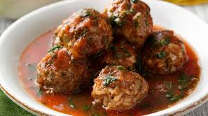

Albondigas
Inicio

Las albóndigas son bolitas de carne molida, generalmente de res o cerdo, mezcladas con especias, arroz y hierbas frescas. Se cocinan en un caldo de jitomate con verduras, lo que les da un sabor suave y jugoso. Este platillo es ideal para compartir en familia y suele servirse acompañado de arroz o tortillas.
La receta de albóndigas es muy popular en la cocina mexicana y puede variar según la región. Es un platillo reconfortante, perfecto para los días fríos, y una excelente manera de disfrutar de una comida casera y nutritiva.
Ingredientes
- 500 g de carne molida de res o cerdo
- 1 huevo
- ½ taza de arroz crudo
- 2 dientes de ajo picados
- ½ cebolla picada
- 2 jitomates grandes
- 2 zanahorias
- 2 papas
- 1 rama de hierbabuena (opcional)
- 1 litro de caldo de pollo o agua
- Sal y pimienta al gusto
- Aceite vegetal
Pasos
- Mezcla la carne molida con el arroz, huevo, ajo, cebolla, sal y pimienta hasta integrar bien.
- Forma bolitas medianas con la mezcla.
- Licúa los jitomates con un poco de agua y cuela la salsa.
- En una olla, calienta un poco de aceite y sofríe la salsa de jitomate.
- Agrega el caldo de pollo o agua, las zanahorias y papas en cubos, y la rama de hierbabuena.
- Cuando hierva, añade las albóndigas con cuidado.
- Cocina a fuego medio hasta que las albóndigas y verduras estén cocidas (aprox. 30 minutos).
- Sirve caliente, acompañado de arroz o tortillas.